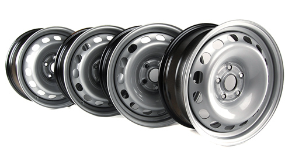
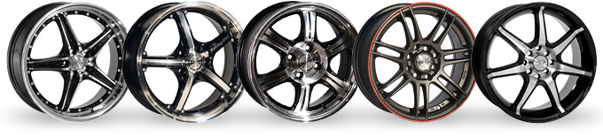
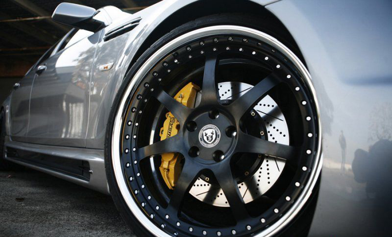
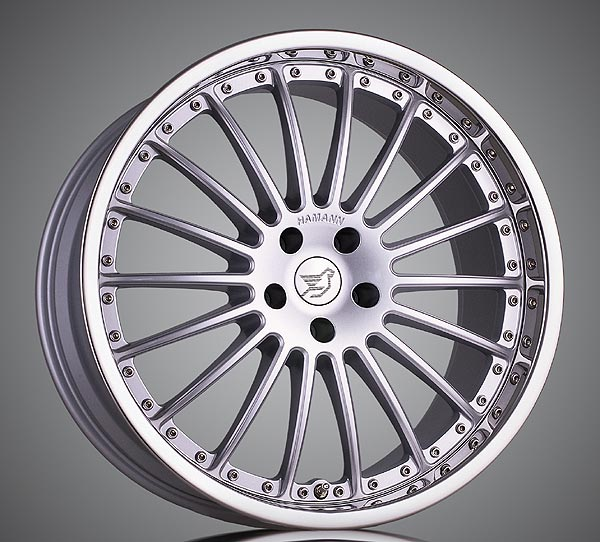
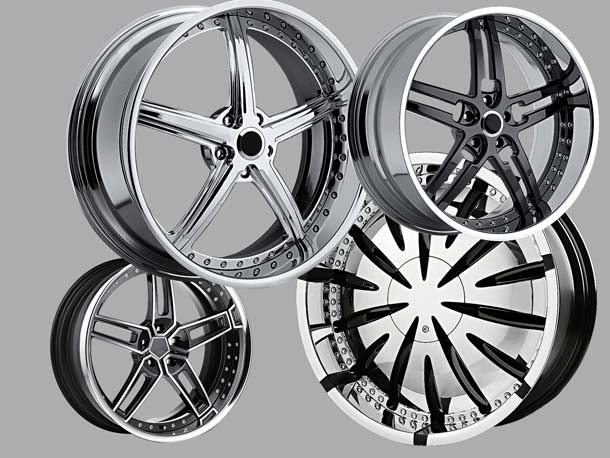
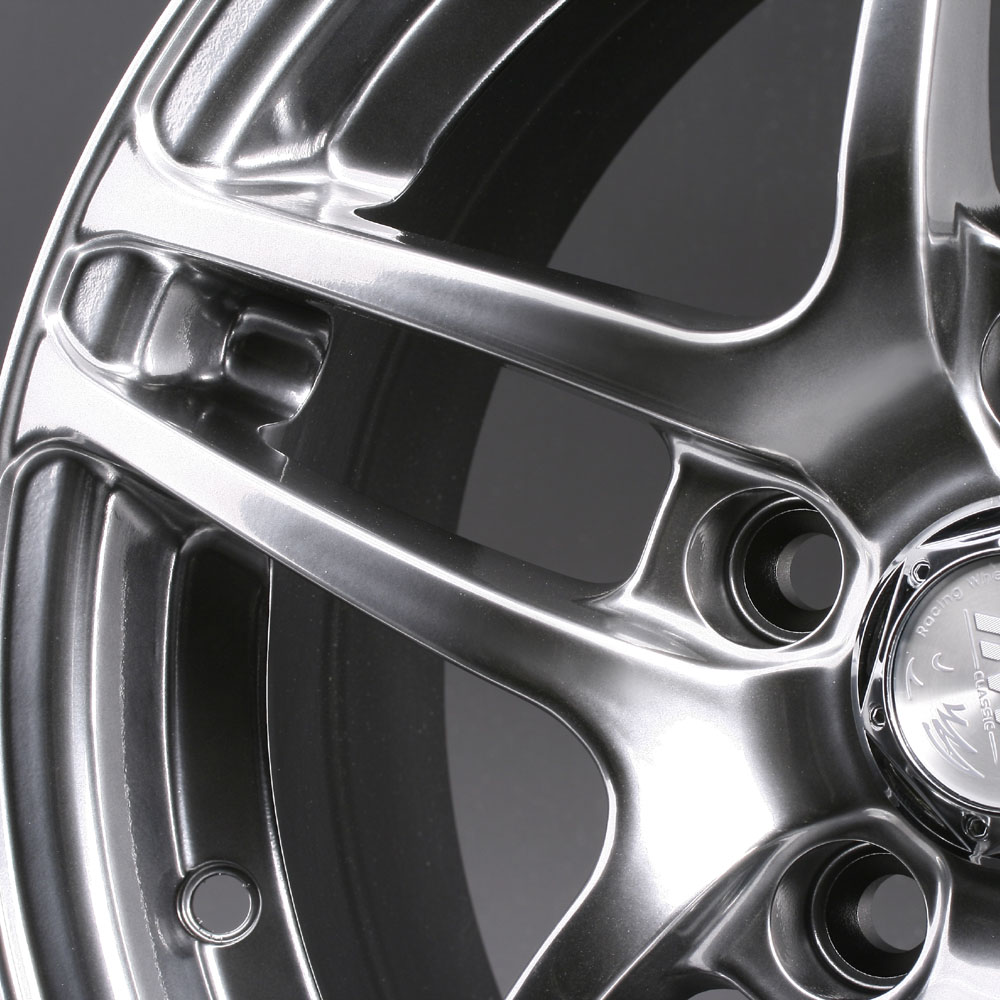
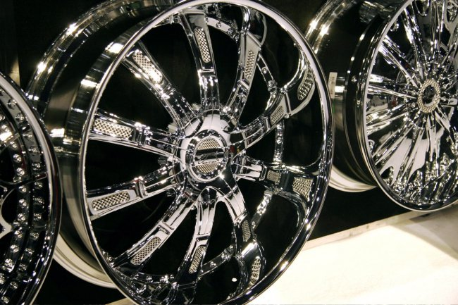
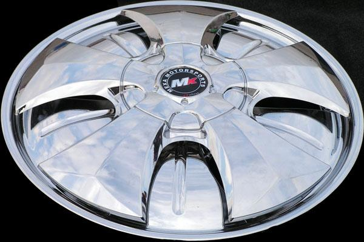

Все про автомобильные диски, их типы и разновидности
1. Стальной диск — обычная стальная штамповка ("бывалые" автомобилисты прозвали их "тазиками"). Они тяжелые и страшные, однако, при этом, самые простые в ремонте, поскольку они зачастую очень подвержены деформации. В случае слабой антикоррозионной обработки, такие диски, вдобавок ко всему, еще и поржавеют со временем. "Тазиками" зачастую комплектуются бюджетные представители отечественного автопрома, название которых заканчивается на "…АЗ". Такие автомобильные диски, в принципе, соответствуют самым автомобилям да вдобавок ко всему — дешево и сердито. Есть, конечно же, модели стальных дисков, которые, несмотря на принадлежность к классу "тазиков" имеют высокую стоимость, приличный вид и породистую родословную...
2. Литой диск или легкосплавный. Такой тип диска сразу же относит вас к "продвинутым" автомобильного мира. Эти диски имеют более эстетичный вид, поэтому выйти в люди с таким — уже будет не стыдно. Литые диски отливают из алюминиево-магниевого сплава. Соответственно они имеют меньший, по сравнению со стальными аналогами, вес. Более того, вариантов на рынке на любой вкус и цвет, как говорится, были бы деньги. Беда таких дисков — они могут лопнуть или разломаться, не способны сгибаться. Их можно только сварить, да и то, такую работу можно доверить только опытному сварщику. Стальные диски в этом вопросе намного выигрышнее смотрятся — их довольно быстро "прокатывают", после чего они выравниваются и становятся как новые. При покупке легкосплавных дисков, нужно быть предельно внимательным, так как этот рынок давно оккупирован китайским производителем — есть вероятность покупки некачественной продукции. А трасса ошибок не прощает...
3. Кованый диск. Этот тип, как и предыдущий, производятся из алюминиевого сплава (или) магния. Однако, в отличие от простых литых дисков, кованые диски после отливки дорабатываются ковкой, и подвергаются термомеханической обработке. Такие автомобильные диски имеют еще меньший вес, нежели литые собратья, при этом они обладают большей прочностью. Из-за специфики производственного процесса и способа их изготовления, кованые диски не имеют такого разнообразия со всевозможными вариантами внешнего вида, коим смело могут похвастаться представители предыдущего класса. Однако отсутствие широкого выбора компенсируется высокой прочностью. В ходе испытаний было доказано, что разрушить кованые диски во время движения — практически нереально. Скорее развалятся на запчасти подвеска автомобиля, а вот ковка, в самых редких случаях, может слегка деформироваться. Такой тип автомобильных дисков зачастую используется на спорткарах, участвующих в соревнованиях.
4. Составной диск — как вы, наверное, догадались из названия, изготавливают по методу сборки нескольких частей в одно целое. Конструкция надежно скрепляется болтами, при этом следует понимать, что производитель, как правило, применяет стальные болты в изготовлении составного диска. Следовательно, если вы не сделаете специальной обработки — коррозия просто неизбежна. Лучше всего если конструкция будет на титановых болтах. Составной диск подобно конструктору может содержать в себе как легкосплавные детали, так и кованые, а иногда даже металлические элементы. За счет разнообразия и возможности компоновки таких автомобильных дисков, они могут быть легкими и прочными одновременно. Конечно же, чем круче и "наворочаннее" будет диск, тем круче будет его стоимость.
Что касается веса, то я думаю, не стоит лишний раз распыляться на объяснения о том, что чем легче автомобильный диск, тем лучше для автомобиля и его подрессоренных масс. Последние в прямом смысле "загружают" подвеску, тем самым ускоряя процесс ее износа. Более того, при уменьшении общего веса автомобиля, его динамические характеристики улучшаются, а расход топлива существенно уменьшается.
У современного автомобильного рынка в последнее время наблюдается "передозировка" так называемыми хромированными дисками. Хромированный диск это все тот же легкосплавный диск, который подвергался дополнительной обработке никелем для придания колесам блеска, а также изящного внешнего вида.
Через некоторое время хром способен "облазить", однако это происходит не так по вине мастера, который наносил никель или самого покрытия, сколько по вине наших "зимних" дорог с соляным покрытием. Так что, думайте! Как по мне, так это вовсе не практично и, на мой взгляд, больше похоже на какую-то "дешевую цацку".
5. Спиннеры. Данное изобретение является мечтой многих подростков и прерогативой больших черных дядек с "брюликами" в зубах. Устройство спиннеров — просто до невозможности. На ось литого диска устанавливается металлическая (легкосплавная) пластина с подшипниками. Когда колеса автомобиля вращаются, эта часть диска создает иллюзию будто колесо не крутится вовсе, стоит на месте. И как только машина прекращает движение, из-за кинетической энергии, пластина начинает раскручиваться. Такая "фича", как вы понимаете, играет чисто эстетическую роль в автомобиле. Стоимость спиннеров несколько выше простых литых "собратьев", при этом они тяжелее и более хрупкие в эксплуатации. Хотя, как говорится, каждому свое: "Кесарю — кесарево...". Если вы чувствуете необходимость или живете по принципу "пацаны не поймут", тогда вам просто необходимо купить спиннеры.
